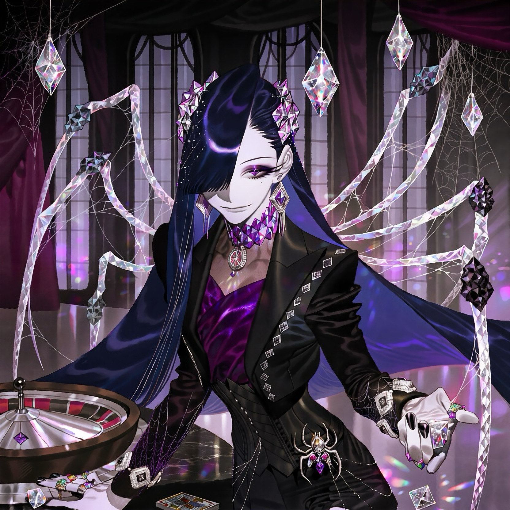

CHARACTER RECORD / 019STATUS: AVAILABLE

✦IMAGE
NOT FOUND
NOT FOUND
キロス
✦ WITH OUTFIT
服装込み
PROMPT DATATXT / 019
masterpiece, best quality, ultra detailed, absurdres, girl, solo, adult woman, dark fantasy, gothic casino aesthetic,
1.5::tall slender figure, elegant long limbs, narrow waist, graceful posture, cool ivory skin, sharp cheekbones, narrow amethyst eyes, diamond-shaped pupils, long dark eyelashes, subtle smoky eye makeup, confident enigmatic smile, small beauty mark beneath one eye::,
1.5::long midnight blue hair, glossy waist-length hair, sleek straight hair with asymmetrical layers, side-swept bangs partially covering one eye, subtle violet highlights, thin silver hair strands resembling spider silk, intricate crystal hair ornaments, translucent gemstone spider legs emerging from upper back, four pairs of slender articulated appendages, dark faceted crystal tips, delicate web-like filaments connecting the appendages::,
1.5::luxurious black tailored casino suit, fitted cropped jacket with sharp lapels, deep violet satin lining, high-neck sheer blouse, structured corset waistcoat, asymmetrical shorts over translucent black tights, elegant garter straps, pointed ankle boots with crystal heels, long black gloves, silver cufflinks shaped like tiny dice, diamond-pattern embroidery along jacket edges, delicate silver chains draped across hips, amethyst brooch at collar::,
1.5::ornate gemstone jewelry, faceted amethyst choker, dangling diamond earrings, multiple silver rings set with colorful gemstones, transparent crystal dice suspended from a fine chain, jeweled spider brooch at waist, miniature roulette-wheel pendant, polished black gemstone nail art::,
1.4::supernatural spider dealer, crystalline exoskeleton details along shoulders and spine, translucent web patterns shimmering across forearms, faint violet light beneath skin, tiny gemstone fragments floating around fingertips, eight-limbed silhouette, elegant predatory movements, mysterious supernatural aura::,